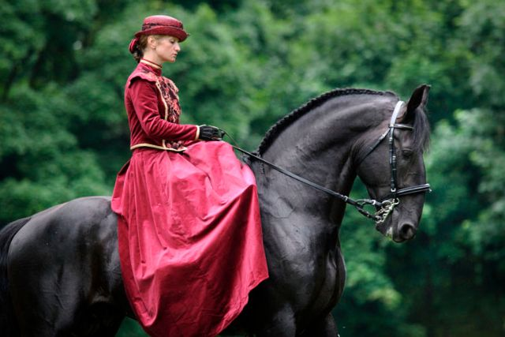

Ласкаво просимо до кінного клубу «KRC» — унікального місця, де мешкають справжні перлини світу кінних порід — кладрубські коні. Це одна з найстаріших порід Європи, що бере свій початок із XVI століття в Чехії, спеціально виведена для королівських церемоній та парадних упряжок.
Наш клуб створений для тих, хто цінує шляхетність, естетику руху та гармонію у спілкуванні з кіньми. Кладрубські коні — це втілення спокою, інтелігентності й благородства. Завдяки своїй рідкісності вони не лише викликають захоплення, але й викликають повагу як культурна спадщина Європи.
У клубі «KRC» ми створили умови, які дозволяють цим унікальним тваринам жити в комфорті, розвиватися та взаємодіяти з людьми. Наші відвідувачі можуть не лише милуватися цими дивовижними кіньми, а й пройти заняття з верхової їзди, познайомитися з іпотерапією, а також дізнатися більше про історію породи та її роль у монархічних традиціях. Ми пишаємося тим, що зберігаємо і поширюємо культуру спілкування з кіньми найвищого рівня. Кожен кінь у нашому клубі має родовід, що сягає кількох століть, і є гордістю світового кіннознавства.
Запрошуємо до клубу «Kladruby Royal Club» — місця, де історія оживає у граційних рухах благородних коней.
Вас чекає знайомство з рідкісними кладрубськими кіньми, огляд доглянутої конюшні та мальовничої території клубу. Ви дізнаєтесь про історію породи, зможете побачити коней зблизька, спостерігати за їхньою грацією та спокоєм, доторкнутись до культури європейського кінного мистецтва. Для гостей також доступні фото-локації, можливість погодувати коней та поспілкуватись із нашими тренерами.
Тривалість: 60 хвилин
Ціна: 300 грн (дорослі), 200 грн (діти до 12 років), безкоштовно (діти до 5 років)
Екскурсії проводяться щодня за попереднім записом. Обов'язково приходьте в зручному одязі та з гарним настроєм!
Пориньте у світ спокою та гармонії, здійснивши прогулянку на спині благородного кладрубського коня. Маршрути пролягають через лісові стежки, відкриті поля та тихі долини, де можна відчути єдність із природою. Наші інструктори підберуть темп та напрямок з урахуванням вашого досвіду — як для новачків, так і для впевнених вершників.
Під час прогулянки ви матимете змогу відпочити від буденності, відновити внутрішню рівновагу та просто насолодитися живою красою навколо. Це не лише відпочинок, а справжня терапія — для тіла і душі.
Тривалість: 30–60 хвилин (на вибір)
Ціна: від 750 грн
Для кого: діти, дорослі, початківці та досвідчені вершники
Запис обов’язковий. Усі прогулянки супроводжуються досвідченим інструктором.